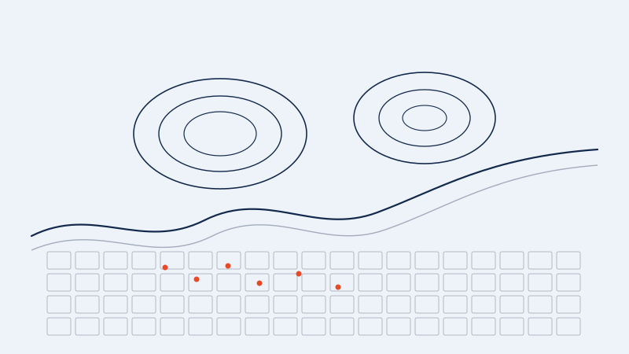

Permafrost thaw risk to infrastructure in Wainwright, Alaska
Question: Which buildings in Wainwright, an Arctic coastal community, are exposed to thawing permafrost, and where is safer ground for neighborhood growth? This work is part of the Permafrost Discovery Gateway.
Approach: I combine satellite and geospatial layers on ground ice, ice-wedge polygons, drained lake basins, ponding, coastal erosion and the built environment on a fine grid over the community. Risk is defined as the combination of hazard, exposure and vulnerability, and I test how sensitive the resulting maps are to the choices made in weighting the hazard layers.
Where it stands: The analysis is ongoing. The aim is a planning map that shows both a risk class and how confident we are in it, so that local decision makers can see where building is a concern and where expansion looks safer.